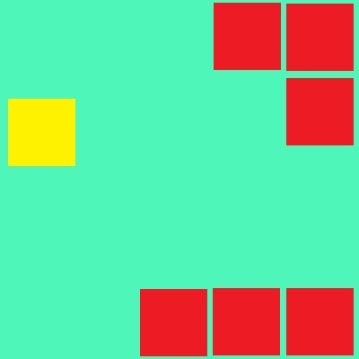

These are games that I have made in JavaScript
There are 8 games;
I would not recommend playing wack-a. I started it, but never got round to finishing it.
I would like to point out that, especially for Dot Man and Not-so-flappy Dot, the 'lag' / stop-go running of the games is not your computer. The way that I designed the games to work has the side effect of this occurring.
I hope to make more games or HTML/JavaScript related Things, and add them here in the future.
However, as the second of prelims approaches, and my time left at school running out, it
is unlikely any new games or features would be added here.
This is website version 5.1.0.3
Do note, if you do not have JavaScript enabled for your browser, please do enable it.
These games need it to run.
And if you are using Microsoft Edge - you cannot play Dot Man
You lost the Game
This Website was made by Matthew Cole during late 2021 and early 2022
It was designed to allow the game 'not-so-flappy dot' to be connected to its random section generator, which would require pHp, but I have not done this.
However, I have used the website as a platform for several other games as well.
For the 'Not-so-flappy Dot' game, I would like to Give Special
Thanks to Andrew Twigg, who not only Cut to code of the game
down by at least 3500 lines, but he added in the High scores
and, most importantly, allows the game to adjust its width
depending on the screen size.
Ultimately, this little bit of code was able to reduce
the size of each of my game down quite considerably
However, I have since found another way that I prefer to use.
However, today, including comments and empty lines, it is about 22300 lines of code!
I should probable also give credit to W3 Schools, a website that teaches about HTML, CSS, JavaScript, pHp and many other languages. This was where I went to find several bits of code and learned most of the JavaScript and pHp I know today. Also, most of the obscure CSS properties I found here.
I would like to give a big thank you to Mr MacMillan for helping me where he could with this website and teaching me through S5 and 6 computing. I could not have the skills I have today without his teaching.
The sounds used in the games are from https://www.zapsplat.com/
The game, 'not-so-flappy' dot, was first made during June 2021. I, Matthew, created the game on a 5 by 5 pixel Microbit, and had it working well.
I tried to expand the game, but was stopped by the storage limit on a Microbit
This led me to think about putting it onto a webpage, using JavaScript to connected it to HTML. However, over the summer holidays, this was never made and after the summer, I did some work with pHp
During October and November 2021, I began to make the website version of the game. After re-writing the entire code, as the JavaScript and the Microbit code were not compatible, and a lot of frustrated staring at squares to change, I got it to work.
The first step was getting the 20 by 8 grid of 'Dots' to exist and turn on and off. This involved the creation of a plot and unplot function which would determine the coordinate of the dot selected then toggle that one to a specified colour. These 3 functions (on, off and player) each consisted of about 500 lines of code.
Once these core functions were made, I had to start making them appear in a pattern, which was not so difficult as I had already done it on the Microbit. And very quickly I had a running pattern, which at the time would repeat.
The next step was the Player interactivity. At first this was just a few buttons on the page that you had to click with the mouse but this soon became too slow for me. I then experimented with keyboard events and was able to have the keyboard do the same job as the buttons. The Buttons still remain there, in case it is ever use on a touch screen device, making it the only one of my games that is compatible.
As this was now working, it attracted the attention of several people.
One of these people was Andrew Twigg, who has had some brilliant Ideas on how to shorten my code and make it do things I want it to do, but I had never been able to do
He managed to reduce the size of my plot functions to about 5 lines of code each. He also found a way to store the high scores. I however, expanded this to create the High scores table and the names that are here today
After making 'not-so-flappy Dot', I wanted to make more of these games, so I began working on two, with two more